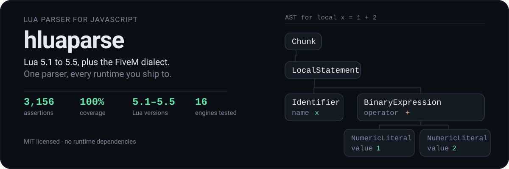

A Lua parser written in JavaScript. Parses Lua 5.1 through 5.5, plus FiveM's dialect — safe navigation, compound assignment, and non-English identifiers.
No runtime dependencies. Ships TypeScript declarations. Runs in Node, browsers, Rhino, Duktape, QuickJS and RingoJS.
Install
Releases are published on GitHub, not npm.
git clone https://github.com/ItzDabbzz/hluaparse.git
cd hluaparse
npm install
Then require it:
const hluaparse = require('./luaparse');
const ast = hluaparse.parse('i = 0');
In a browser the UMD build exposes two globals: hluaparse, and
fivem-luaparse as a compatibility alias for existing FiveM resources.
Usage
const ast = hluaparse.parse(code, options);
parse returns a plain JSON Abstract Syntax Tree.
What it parses
luaVersion selects the dialect. This table is the measured behaviour of
this parser, not documentation of intent — every cell was produced by
parsing the construct and recording whether it succeeded.
| Feature | 5.1 | 5.2 | 5.3 | 5.4 | 5.5 | FiveM5.4 | LuaJIT |
|---|---|---|---|---|---|---|---|
goto / labels |
✅ | ✅ | ✅ | ✅ | ✅ | ✅ | |
| Hex float fractions | ✅ | ✅ | ✅ | ✅ | ✅ | ✅ | |
continue |
✅ | ✅ | ✅ | ✅ | ✅ | ✅ | |
C-style comments --[[ ]] |
✅ | ✅ | ✅ | ✅ | ✅ | ✅ | ✅ |
Bitwise & |
✅ | ✅ | ✅ | ✅ | |||
Integer division // |
✅ | ✅ | ✅ | ✅ | |||
Local attributes <const> |
✅ | ✅ | ✅ | ||||
global declarations |
✅ | ||||||
Named varargs ...args |
✅ | ||||||
Compound assignment += |
✅ | ||||||
Safe navigation ?. |
✅ | ||||||
| Non-English identifiers | ✅ |
The default is Lua 5.5, the newest supported release. Pass an explicit
luaVersion to target something else — stock 5.1 through 5.4 are all
available and all reject anything the real compiler rejects.
FiveM5.4 is a deliberate divergence, kept available but no longer the
default. Under it:
- Non-English identifiers are accepted.
local имя = 1parses. Stock Lua rejects this in every version, which is why it lives behind its own option. - FiveM syntax is accepted. Safe navigation (
?.) and compound assignment (+=) are extensions, and its runtime allows them, so the parser matches.
Under the stock profiles those constructs are rejected rather than silently allowed, so a mistake surfaces instead of shipping. FiveM is an opt-in now, not something you have to opt out of.
The AST
Every node follows one rule: the type name, then that node's own fields. Child
nodes are always real child nodes, never folded into a caption. For
local x = 1 + 2 you get:
{
"type": "Chunk",
"body": [
{ "type": "LocalStatement",
"variables": [ { "type": "Identifier", "name": "x" } ],
"init": [ { "type": "BinaryExpression", "operator": "+",
"left": { "type": "NumericLiteral", "value": 1, "raw": "1" },
"right": { "type": "NumericLiteral", "value": 2, "raw": "2" } } ] }
],
"comments": []
}
Drop the local and the same expression becomes an AssignmentStatement
instead, with variables and init in the same shape.
luaparse.ast holds every constructor, so you can rewrite node creation to
reshape the tree. The onCreateNode callback is the supported way to observe it.
Options
| Option | Default | Meaning |
|---|---|---|
luaVersion |
'5.5' |
'5.1' '5.2' '5.3' '5.4' '5.5' 'FiveM5.4' 'LuaJIT' |
wait |
false |
Signal end of input yourself, via the returned parser object |
comments |
true |
Collect comments into chunk.comments |
scope |
false |
Track identifier scopes and isLocal |
locations |
false |
Attach loc to each node |
ranges |
false |
Attach range to each node |
extendedIdentifiers |
FiveM only | Allow code points ≥ U+0080 in identifiers |
encodingMode |
'none' |
'none' 'pseudo-latin1' 'x-user-defined' |
onCreateNode |
null |
Called with each completed node |
onCreateScope |
null |
Called when a scope opens |
onDestroyScope |
null |
Called when a scope closes |
onLocalDeclaration |
null |
Called with each declared local identifier |
Defaults are also on hluaparse.defaultOptions if you want to change them
globally.
Encoding modes
Lua strings are byte strings, and Lua implementations read source as octets. The parser's input is a JavaScript string, so something has to bridge the two.
'none'— pass everything through untouched. String literals parse tonull. This is the default.'pseudo-latin1'— source decoded asiso-8859-1, byte escapes mapped to U+0080–U+00FF. Not the WHATWGiso-8859-1, which iswindows-1252.'x-user-defined'— source decoded as WHATWGx-user-defined, byte escapes mapped to U+F780–U+F7FF.
Lexer
The lexer is usable on its own. Each token carries a type (match against
hluaparse.tokenTypes), a value, line, lineStart, and a range you can
use to slice the raw text back out of the source.
const parser = hluaparse.parse('foo = "bar"', { wait: true });
parser.lex(); // { type: 8, value: 'foo', line: 1, lineStart: 0, range: [0, 3] }
parser.lex(); // { type: 32, value: '=', line: 1, lineStart: 0, range: [4, 5] }
parser.lex(); // { type: 2, value: null, line: 1, lineStart: 0, range: [6, 11] }
The StringLiteral value is null under the default encodingMode: 'none',
because the bytes are never interpreted. Pass encodingMode: 'pseudo-latin1'
and that third token becomes value: 'bar'. Use range to slice the raw
source text when you need the bytes exactly as written.
Command line
$ node bin/luaparse "i = 0"
{"type":"Chunk","body":[],"comments":[]}
{"type":"Chunk","body":[{"type":"AssignmentStatement","variables":[{"type":"Identifier","name":"i"}],"init":[{"type":"NumericLiteral","value":0,"raw":"0"}]}],"comments":[]}
One JSON line per input, so that is two: the empty first line is the implicit end-of-input marker, and the second is the parse result.
-c/--code for a snippet, -f/--file for a file, -b/--beautify to indent the
output, -q/--quiet to suppress it.
Correctness
The suite is 3,197 assertions and CI enforces 100% statement, branch, function and line coverage. Every run is also validated as well-formed TAP, and a run that produces no TAP at all is treated as a failure rather than a pass — an engine that crashes on load cannot report success.
Tests run on 15 engine configurations:
| Engine | Versions |
|---|---|
| Node.js | 20, 22, 24 |
| Bun | 1.3.13, latest |
| Rhino | 1.9.1 |
| RingoJS | 4.0.0 |
| Duktape | 2.4.0, 2.5.0, 2.6.0, 2.7.0 |
| QuickJS | 2020-09-06, 2025-04-26, 2025-09-13, 2026-06-04 |
Node 20 is the oldest supported Node line; earlier ones are all end-of-life and no longer tested. The oldest Duktape and QuickJS builds are kept deliberately — they are the floor for the embedded engines this parser is most often dropped into.
luaparse.js is modern ES6, which those older embeddable engines cannot parse.
dist/luaparse.es5.js is a downlevelled build generated from it
(npm run build-es5), and CI runs the ES5-only engines against that instead.
It is generated, never hand-edited, and behaves identically — both files pass
the full suite.
Beyond its own suite, releases are checked differentially against real Lua
compilers: a corpus of 548 constructs is parsed by both hluaparse and luac,
and any disagreement on accept-or-reject is a bug. That process is how the Lua
5.1 hex-float bug was found — 0xA.8p0 was accepted under 5.1, where real
luac 5.1.5 rejects it.
Lua 5.5 is a draft. No official compiler exists to diff against, so it is verified against the 5.5 manual only.
Development
npm install
make qa
make qa runs the tests, the linter, complexity analysis and the coverage gate.
On Windows, invoke each target's command through bash — make drives
cmd.exe, which cannot run the extensionless scripts in node_modules/.bin.
Coverage reports are published with each run and land on the project's
gh-pages branch.
Differences from upstream luaparse
Originally written by Oskar Schöldström for his bachelor's thesis at Arcada, and maintained here with FiveM support, Lua 5.5, and the coverage and differential work described above.
- Lua 5.5:
globaldeclarations, named varargs, andlocalattributes everywhere they apply. FiveM5.4: safe navigation, compound assignment, extended identifiers.- Hex float fractions are correctly rejected on 5.1, where upstream accepts them.
- Unreachable code paths were removed rather than excluded from coverage.
The default is 5.5 here, where upstream defaults to 5.1. Pass an explicit
luaVersion if you need to pin behaviour.
Credits
Much of the original code derives from LuaMinify, the Lua source, and Esprima.
License
MIT